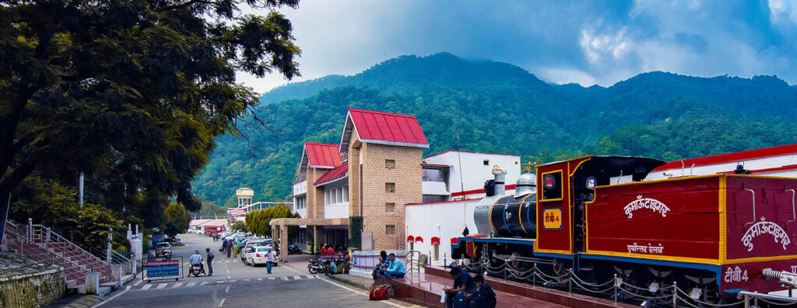

Kathgodam: The Last Railway Station of Uttarakhand's Kumaon region
Kathgodam
Kathgodam is gateway to many sacred and beautiful places in Uttarakhand like Nainital, Pithoragarh, Dharchula and many others. Kathgodam has wonderful views of the hills and is located along the banks of the Gola River. Studded like a gem in Himalayan region, this small town is also known as the Timber Depot of Kumaon.
There are various beautiful scenic rivers and waterfalls to sacred monuments and spiritual retreats. Kathgodam has a collection of attractions. Kathgodam is also a jumping-off point for various places like Bhimtal, Nainital and Sattal, the beautiful picturesque lake towns are set in the foothills of the Kumaon Himalayas.
There are many beautiful tourist destinations from Kathgodam that will leave you spell bound and make you yearn for this place even more. This small town will never disappoint you, instead it will make you feel more mesmerised than before. Kathgodam will give you so many memories when you will look back, it will remain etched in your heart forever.
Location of Kathgodam
Kathgodam is a precious gem of Kumaon region of Uttarakhand. Kathgodam is about a 5 to 6 hour long drive from New Delhi and has regular train links with the city in addition to Mumbai, Kolkata and Lucknow.
Weather in Kathgodam
Each season brings something new to Kathgodam. The mild spring season of March and months of autumn season (october and november) are great for traveling here while the monsoon rains of the summer create a breathtaking green landscape. Kathgodam has a year-round climate that is pleasant and suitable for sightseeing.
Get in Touch
Have An Enquiry? Write To Us…
Popular Pilgrimage Packages
Information Links and Downloads
Talk to Kailash Yatra Expert
Submit your contact number.
Kailash Yatra Expert will call You within 1 minute.
(24X7 Free Service, India Number only)
Get All Details on Mobile
Related Packages


Adi Kailash Helicopter Package
4 Night / 5 Days
Route : Pithoragarh → Gunji/ Nabhi/ Napalchu(3N) → Pithoragarh →+0


Adi Kailash by road From Kathgodam
7 Night / 8 Days
Route : Pithoragarh(1N) → Dharchula(1N) → Gunji /Napalchu (2N) →+3

Frequently Asked Questions
Related Blogs


Weather and Temperature of Adi Kailash and Om Parvat: Exploring the Seasonal Variation of Temperature at Adi Kailash & Om Parvat

Kathgodam: The Last Railway Station of Uttarakhand's Kumaon region


We Got Featured in the Media


 Call
Call  WhatsApp
WhatsApp  Enquiry
Enquiry Connect with us :
Office Address :
Trip To Temples, 201, JOP Plaza
Sector 18, Noida, 201301
Uttar Pradesh, India
Call : +91-8510007751
E-mail : info@triptotemples.com